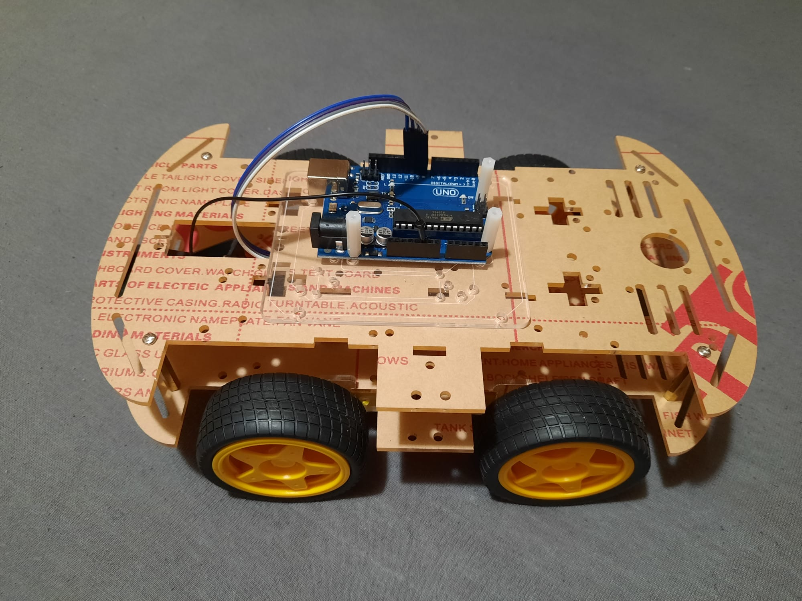

Overview
The idea behind this project is to build a self-driving car that is able to avoid obstacles. The car will be fitted with an ultrasonic sensor that is rotated using a servo motor, allowing it to detect obstacles in its path. When an obstacle is detected, the car should stop and turn in a direction with no obstacles. Another ultrasonic sensor is fitted to the back of the car allowing it to detect obstacles behind when it is reversing. It will be powered by 4 DC motors, one for each wheel.
Schematic
